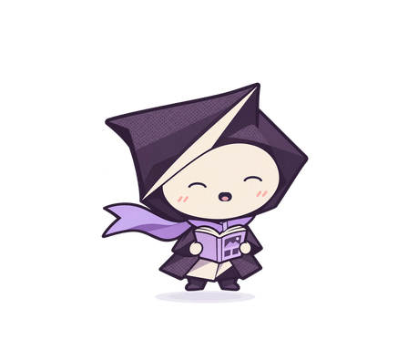
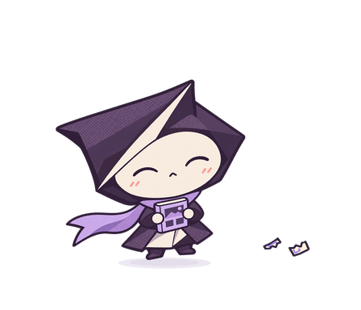

Prototipe untuk review sebelum ditulis di Flutter. Pilih status di panel kanan, atau ketuk tombol di layar untuk mengikuti alurnya: hubungkan, periksa, sinkron, lalu tersinkron.


Sinkronisasi menyamakan library, progres baca, dan bookmark antara iPhone dan server Suwayomi milikmu. Library tetap tersimpan di iPhone, jadi Kuchie bisa dipakai walau server mati.
Library dan kategori, progres baca dan riwayat, bookmark chapter, dan setelan reader per series. Rating, tag, dan catatan bisa dinyalakan di Lanjutan.
File unduhan tidak disalin otomatis. Series dari file import dan repo Kuchie tetap hanya di iPhone, karena server tidak punya source-nya.
Kuchie tetap jalan dari data di iPhone. Chapter dibaca langsung dari source lewat extension di iPhone, dan perubahan dikirim saat server terjangkau lagi.
Saat terhubung ke server, unduhan disimpan di server supaya iPhone tidak penuh. Pakai Simpan untuk offline kalau ingin membaca tanpa internet. Unduhan lama di iPhone bisa dipindahkan ke server lewat Penyimpanan.
Tidak. Tombol Pasang memasang extension di iPhone dan di server sekaligus.
Buka Server Suwayomi, lalu Putuskan koneksi. Library dan progres tetap di iPhone, dan chapter di server tidak dihapus.